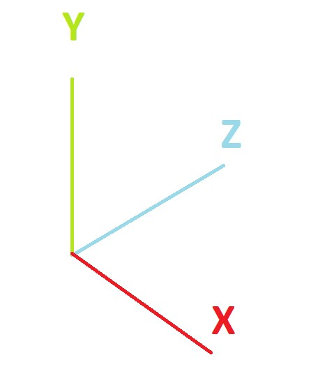
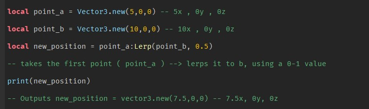
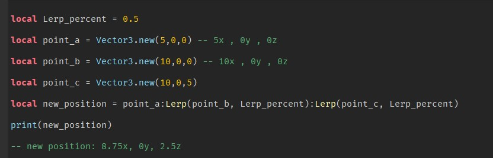
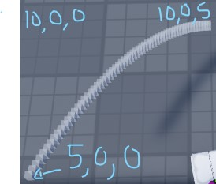
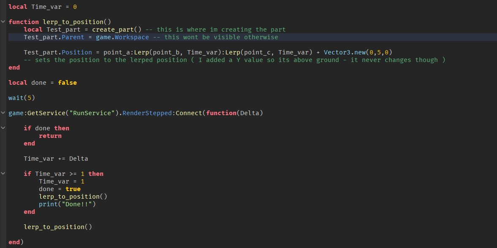
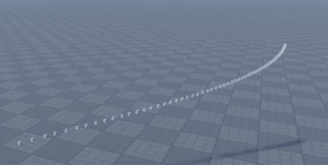
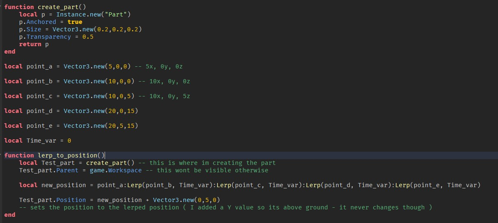

Bezier Curve
5/13/2020
Bezier Curves are very cool and id like to show you how it works!
First we need to understand how Vectors work because I am going to make it in a 3d space. The easiest way to think about a Vector is that its from point a to b. 
This image on the right represents X, Y, Z axis. Basically if three lines were to stick to a Unique axis they could represent any point in a 3d space just by changing the lines lengths. A 3-Dimensonal Vector uses x, y, and z to make up a position in a 3d space.
A cool thing you can do with these Vectors is move between them. For example I could go 50% between Vector a and b. In my code I call this a "Lerp" its like a transition between two points and the transition can be anywhere between 0-1 one being 100%.
Heres a little code example:
Okay I know its getting a little complicated and maybe your taking a while to understand, but we can also lerp twice:
Okay a little more! the reason I changed the lerp percent to a varible is because a Bezier Curve is Lerps over time. The last step to make a Bezier Curve is making lerps over time while changing the lerp percent to in a way record a Curve! Im going to use the same positions and over one second place a small block at each final lerp position.
Heres what we made:
Heres the code and an explanation underneath:
If you need to ignore the bottom half under "local done = false"
Inside this lerp_to_position function that was called every frame for a second we made a part and placed it at the lerped point. as time went by Time_var increased increasing the lerp amount and getting closer to the end goal.
Made this one for fun:
Positions if you want it:
